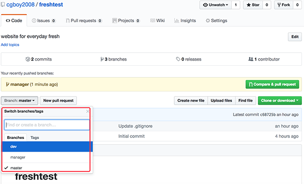

创建分支及搭建项目框架
- 每个员工开发期的代码互不干扰，并行开发，则每人使用一条分支
- 项目开发中公用分支包括master、dev
- 分支master用于发布，默认分支，当需要发布时将dev分支合并
- 分支dev开发阶段性的代码合并，每个阶段的工作完成后需要进行一次，控制项目的进度
- 成员分支用于每个项目成员的代码开发，实现不交叉
创建分支
创建dev分支和manager分支
git branch dev
git branch manager
推送本地分支到远程
push表示向远程推送，origin表示远程仓库的默认名称
git push origin dev
git push origin manager
回到github网站，刷新网页，可以看到远程仓库也多了两个分支：

搭建项目框架
切换到manager分支上，在虚拟环境中，创建django项目
切换分支
git checkout manager
切换到虚拟环境
workon django_env_test3
创建django项目
django-admin startproject ttsx
提交项目文件夹到版本库
git add ./
git commit -m '创建django项目'
合并分支并推送
将manager分支合并到dev分支，再推送到远程。
切换分支到dev
git checkout dev
合并manager分支
git merge manager
将dev分支推送到远程
git push origin dev
切换分支到master
git checkout master
合并dev分支
git merge dev
将master分支推送到远程
git push origin master